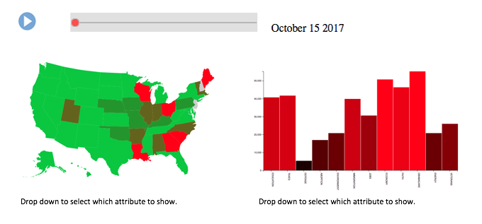

Instead of having a series of visualizations, our goal is to have one, multi-pronged visualization that can answer a variety of questions at once. Because we only will have one visualization, we're not going to do separate bullet points, or link to other pages, and instead describe everything here.
The visualization would be comprised of two graphs, a chloropleth and a bar graph. Initially, the chloropleth would show the average negativity of political ads in each state, while the bar graph would show the total amount of ads per issue across the entire country. However, although it would begin with an overview of this information for the entire election, the user would be able to slide through time, to see how the political ad atmosphere changed throughout the election. Doing this would let the user look at both how geography and time influence the political ad atmosphere. Furthermore, by offering a chloropleth and then an aggregate bar graph, it allows the user to watch how states change as the overall national focus changes.
As mentioned briefly before, the core of the interaction would be the ability to change the time. We will likely group our data into month long stretches of time, and give the user the ability to either animate, with a button click, or scroll through the time range on the slider. Doing so would change both of the graphs at the same time, so they can see how the state level atmosphere changes in conjunction with the national atmosphere. However, although the user can change the time series, it will be initialized to the entire election timeframe. For example, a user could focus on the primary election timeframe to see how the negativity and issue importance differed from the general elections. Second, although the initial graphs would be initialized to show negativity and relative issue importance, the interactions would allow the user to go far beyond that. They could select which variables to focus in on for each of the graphs. This would be done through two drop down menus. For instance, they could look at how the total spending per state changes over time with the fluctuation in channel usage for running ads. Finally, you'd be able to splice the data so that you are only focusing on a specific political party or specific election. With this third drop down menu, a user could compare between parties, or between certain elections. For instance, if someone wanted to see who spends more money on political ads, they could toggle between Democrats and Republicans to see when and where they spend money differently.
The basic implementation path should be relatively straightforward. We already have a bar graph and chloropleth, and understand how to use them. The main areas of focus will be on pre-processing our data, and working on interactivity. Because the two graphs work simultaneously, we need to make sure that the time frame for the two is identical. We will likely begin by getting a minimally functional page with both of the graphs at the same time. From there, we will figure out adding the functionality of the time slider. Once this is done, we will begin pre-processing more data, and adding more variables to be offered in the interactivity. Pre-processing our data is necessary for our interactivity so it is something that will go hand in hand. We will likely alternate between pre-processing data for a specific interactivity, then implementing said interactivity.
There are two main areas for focus when creating this visualization that could prove to be roadblocks. The first is making sure that the visualizations transition simultaneously when animated. To do this, we will make sure to pre-process the data, to ensure that nothing necessary is loading. A second potential roadblock will be the preprocessing itself. Because our dataset is so large, we will rely on pre-processing all the data before the webpage loads. Although we're confident we can do it all, it will be a sizable chunk of our work.